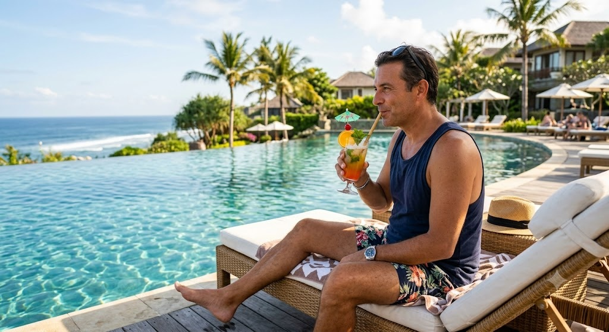
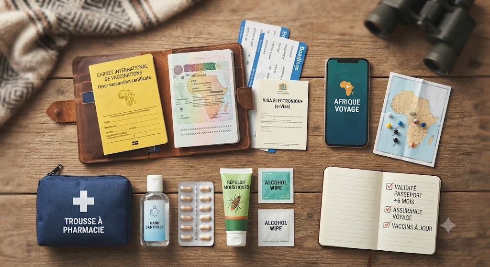
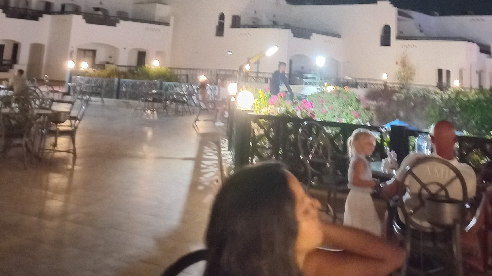
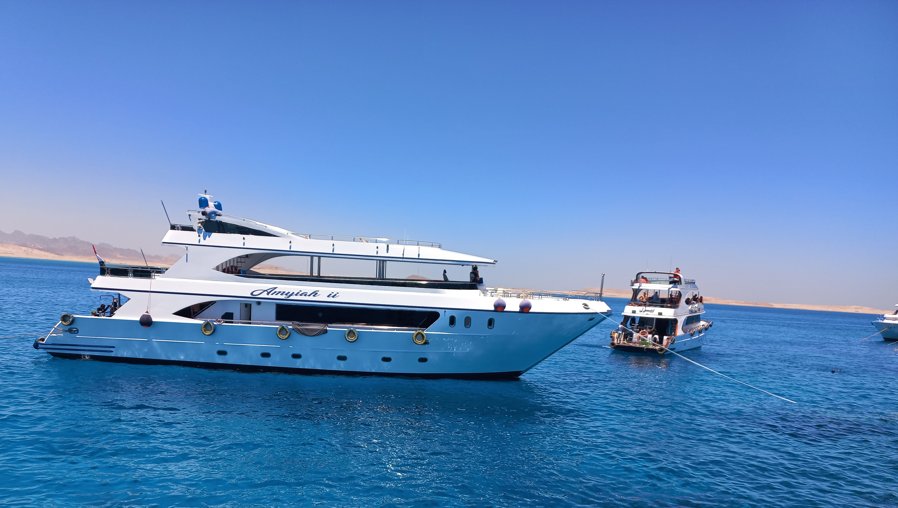
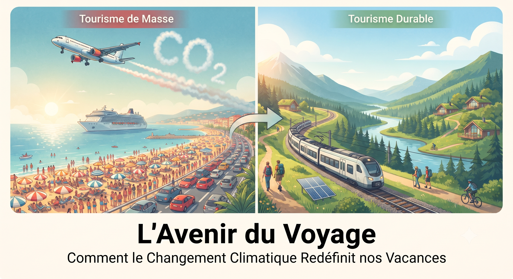
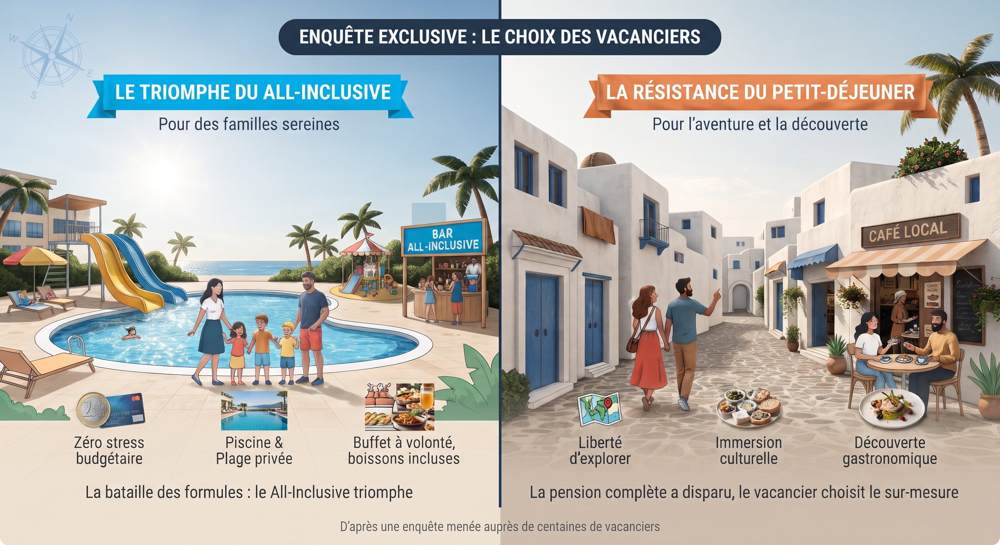

📖 Notre Blog Voyage
Découvrez tous nos conseils d'experts, récits de voyage et guides pratiques.

5 astuces d'expert pour voyager moins cher
Voyager ne signifie pas forcément se ruiner.
Lire l'article completLe guide ultime pour choisir son hôtel en Tunisie
Choisir le mauvais hôtel peut gâcher un séjour.
Lire l'article completDécouvrir la Tunisie autrement : mes coups de cœur
Loin des circuits classiques, la Tunisie regorge de pépites.
Lire l'article complet
Préparer son voyage en Afrique : Le guide indispensable
Préparer un voyage en Afrique demande une organisation rigoureuse.
Lire l'article complet
Quand partir et où ? Le calendrier des voyageurs malins
Pour voyager à moindre coût, la règle d'or est de privilégier le hors-saison.
Lire l'article completComprendre les algorithmes de prix des hôtels
Pourquoi les prix des hôtels changent constamment ? Décryptage des algorithmes.
Lire l'article complet
Avis Hôtel Virginia Resort Sharm El Sheikh : Mon séjour cauchemardesque de 7 nuits.
Un séjour de 7 nuits qui a tourné au cauchemar. Cet établissement ne mérite absolument pas ses 4 étoiles.
Lire l'article complet
Des excursions inoubliables : À la découverte des trésors cachés
Récit de voyage, découvertes extraordinaires et un grand merci à notre super guide Mister Heni !
Lire l'article complet
L'Avenir du Voyage : Comment le Changement Climatique Redéfinit nos Vacances
Découvrez pourquoi et comment nos habitudes de vacances évoluent face au changement climatique, entre tourisme de proximité et recherche de fraîcheur.
Lire l'article completComment trouver un hôtel moins cher : 7 astuces infaillibles pour économiser
Réserver un hébergement au meilleur prix demande quelques astuces. Découvrez 7 conseils d'experts pour alléger la facture.
Lire l'article complet
Enquête exclusive : All-Inclusive vs. Petit-Déjeuner, les vacanciers ont tranché
Pourquoi le All-Inclusive triomphe-t-il auprès des familles et qu'est devenue la pension complète ? Découvrez les résultats de notre enquête exclusive.
Lire l'article complet